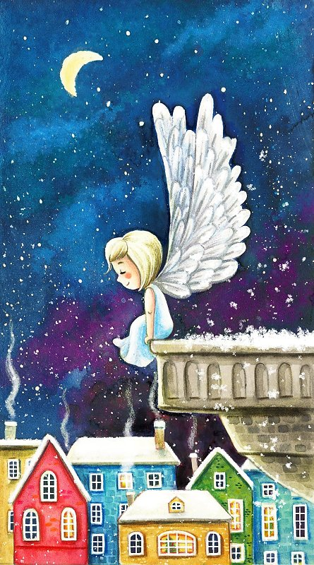

Пусть у вас есть картинка. Разместите ее на странице с помощью тега img. Пусть даны также кнопка и абзац. Сделайте так, чтобы по клику на кнопку в абзац записался путь к картинки из ее атрибута src.

Дана картинка в теге img и кнопка. По нажатию на кнопку в атрибут width запишите значение 300.
Дана картинка в теге img и кнопка. Пусть в атрибуте width задана некоторая ширина. Сделайте кнопку, по нажатию на которую ширина картинки будет увеличиваться в 2 раза.
Пусть у вас есть две картинки. Сделайте на странице тег img и две кнопки. По нажатию на первую кнопку запишите в атрибут src путь к первой картинке, а по нажатию на вторую - путь ко второй картинке.